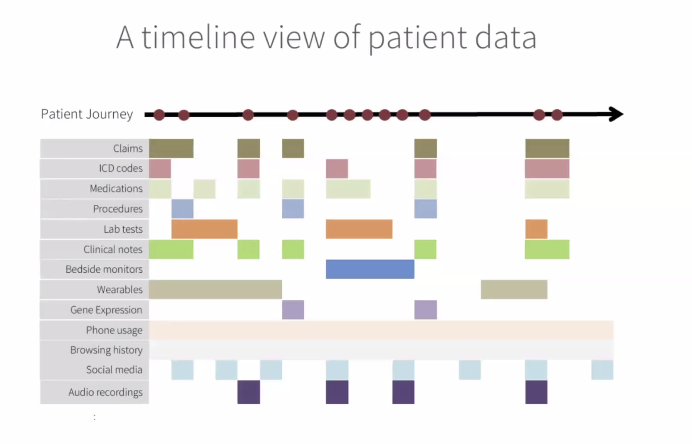
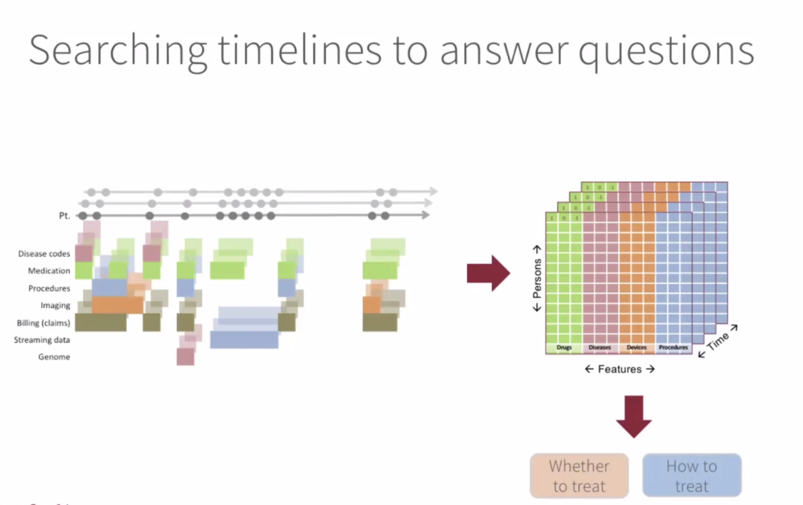

Conference on Precision Psychiatry
Thomas Insel Opening Remarks
- The road to better theraputics runs through better diagnostics
Deconstructing diagnosis:
- ML gives us the tools to deconstruct diagnosis: from dsm consensus to data-driven biotypes
- what are the risks? should be hypothesis-generated, huge opportunity for false discovery - we should be a little skeptical
- some examples: EMBARC - sertraline vs placebo (n=300), preRx variables as predictors.
- EEG predicts who will respond to an antidepressant vs. placebo.
- EEG markers may have relevence across disorder categories. EEG - lots of potential, could be housed in primary care offices.
- What are the tools that can be used in an ER, primary care office?
- EEG is one such tool
- fMRI will never do that
- Digital phenotyping
- getting information from devices that we’re using, phones often know more about us than we know about ourselves
- ability to use voice and speech
- Tying precision medicine to treatment
- Alto’s suite of biomarkers segment patients: from stratification to drug development
- power in improving diagnosis but also therapeutics
- Psychiatry: new day for developing therapeutics, rather than just diagnosis
- Overall
- Deconstructing diagnosis: from clinical consensus to stratification
- diagnosis from singular to multiplexed approaches based on biological, cognitive/behavioral, clinical, social data
- precision psychiatry goes beyond stratification/personalization to treatment development
- precision psychiatry: better diagnosis leads to better therapeutics resulting in better outcomes
- 2030 era: in an era we will using different labels for psychopathology and different therapeutics
We’re not very good at matching the treatments we have to the individuals who need them
Why have we done so badly when we have so much good stuff to offer?
- pnemounia problem: treating everyone with the same thing
- mental illness: most people who should and could be in care aren’t.
- we don’t see people until they’re in crisis
- in contrast to other parts of medicine, the people we take care of are harder to treat (often treated against their free will, unlike cardiac patients)
- the model we’ve used is not working (works well in infectious diaseae, oncology)
- we need a mdoel that goes beyond symptom and relief.
- best model is orthopedic: break a leg, bone reset, and then years of therapy
- patient has a pschotic break - they get acute care but no rehabilitation care. we know what’s powerful (programs, mentorship care) - but that type of value-based care doesn’t happen.
- we have to start paying for the things that work - by doing that, we can save a lot of money, people won’t be rehospitalized, as long as they have social support, safe place to live
- don’t do away with medical model, but we need to add on recovery model for mental illness
- mental illness is a medical problem that requires a social solution
- our house is on fire and you’re telling us about the chemistry of the paint
- people, place, purpose, and prevention
- what is the role of the different stakeholders?
- project warpspeed: public/private venture
- can’t get to scale as an academic
- need to have time bounded projects: need to have goals by x date. people will be held accountable for results - that’s the world we should be in.
- thomas insel: frustrated by how slow it’s been - implementation cycle has been a failure. we hould at least be implementing the therapeutics we had from the 1990s.
Policy Changes/Companies
- future proofing project (australia):
- tools for future proofing (social and emotional learning)
- diatic care: california
- family visits instead of baby visits, preventive care to mitigate adverse childhood experiences
- aggressive care for people after first-episode psychosis (governer leadership)
- precision medicine companies: Alto neuroscience, compass pathways, humanest care, koko, karuna therapeutics
Leveraging Healthcare Data (Lea Davis - Vanderbilt)
- studying genomics of complex phenotypes
- levaraging heterogeneity and comobordity in a real-world care setting
psycheMERGE:
- EHR data available linked with genotype samples (jordan smoller and chris de brie)
- 21 sites and affiliated partners
- built on an existing collaborative infrastructure (eMERGE)
- psycheMERGE focuses on mental illness
- instead of bringing data together, they bring scientists together - benefits: analyses can be scaled up quickly
- over 15 million EHRs
- over 950,000 genotyped patients
- average EHR ercord length year - 5 years
- average record length for genotyped patients - 12 years
- on average, 6 patient visits per year
- structure of healthcare in the US
- primary care (health promotion, counseling, eduation)
- secondary care (assessment, screening to facilitate early detection)
- teriatry: treatment and management of chronic complex disease
- what is included in EHR?
- billing codes (reason for clinical visit)
- note between provider and patient
- narrative notes
- medications
- ER visits
- labs and pathology
- inpatient visits
- health record is very dynamic - always being updated. behind the structure is a human process.
- breadth and depth of EHR data provide a unique view into a lifetime of comorbidities (particular for patients with psychiatric illness)
phenomone-wide association study
- take advanttage of breadth of EHR data
- polgenic risk score for schizophrenia
- this score was strongly associated with schizophrenia
- translational sandbox: how well does this genetic tool perform in a clinical pop?
- phenotypes from EHR can be interrogated using polygenic scores
- can we use lab data to identify potential biomarkers that link genetic risk to mental health conditions and related outcomes?
- qualityLab and LabWAS - > 1 billion lab observations comprised of 11,000 labs
- take genetic risk scores - identify them in individuals - and then test whether those genetic scores are associated with routinely collected labs
Take home messages
- mental health is not biologically separable from physical health
- mental health can have independent effects on physical health and we don’t appreciate enough how the reverse is also true
- 360 - coordinated care improves mental and physical outcomes - power of whole-person care
- genetics allows for a relationship between biology and mental health (e.g., depression + cardiovascular disease story) - biological relationship here (lens of genetics) - co-treatment of both can lead to improved outcomes
- psychiatry is underrepresented in primary care settings
Nigam Shah
- Leveraging healthcare data for precision medicine and psychiatry
- think of data as a timeline view (a live thing)
- using patient timeline objects to provide better care


speaker?? - Inverting model of data sharing
- traditional approach:
- data sharing = data copying
- few audit controls
- huge infrastructure needed
- siloed compute - well resourced place
- need for elastic computing patterns
- cloud-centric approach:
- bring researchers to the data
- this is the goal of the broad data sciences platform
- organization of more than 250 software engineers and ML experts
- Tools: terra (microsoft, broad, verily) - data platform for biomedicine
Laura Germine
- how do we make research studies more accessible?
- minimze barriers to participation
- respect the participant’s time
- make the study relevent to people’s goals and interets by return of individual-level research results
- individualized results as psychoeducation
- covid and the accessibility crisis
- new tools for collecting data online
- how do we get to scale? what tools do most people have - smartphones